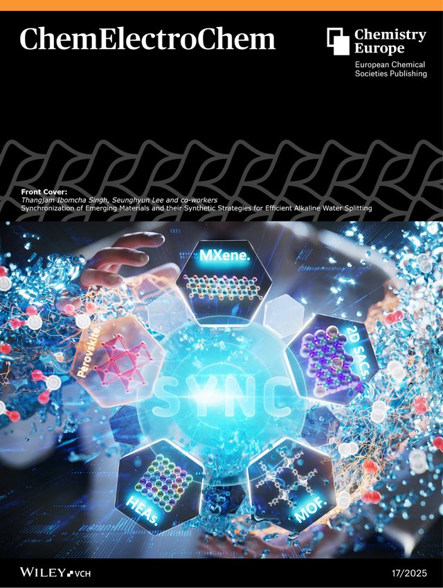
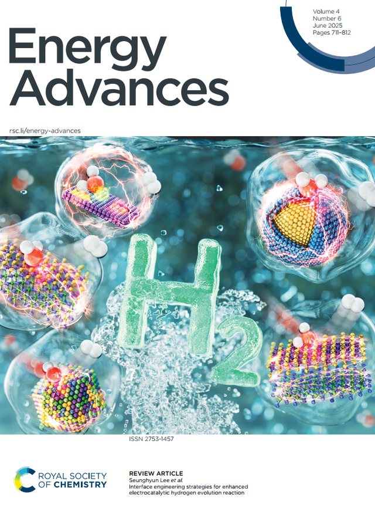

† Equal contribution공동 제1저자 (equal contribution)Front cover Journal front cover저널 front cover 선정
[12]Mechanistic insights into MEA stability and degradation in industrial-scale electrolysis: Fundamentals, recent progress, challenges, and future perspectives
MA Habib†, J Park†, H Kim, S Kim, J Jung, M Singh, D Cha, J Jeong, G Leem, MC Choi, W Yang, S Lee
Nano Convergence, accepted (2026)게재 승인 (2026)
Co-firstReview
MA Habib†, M Singh†, H Kim, J Park, S Kim, DC Cha, J Jung, YS Yeo, S Yoo, J Lee, JH Lee, S Lee
International Journal of Hydrogen Energy 276, 157566 (2026)
Summary요약
Reviews high-entropy materials as electrocatalysts for the oxygen evolution and oxygen reduction reactions, covering the fundamentals of multi-element synergy, rational design strategies, and their application in energy conversion devices.OER 및 ORR용 electrocatalyst로서의 high-entropy material을 다룬 review. 다원소 synergy의 기초, 설계 전략, 에너지 변환 소자 응용을 정리함.
Review
DH Nam†, H Kim†, H Ban†, Ö Durak, J Park, JD Fortner, S Lee
Nano Convergence 13 (1), 11 (2026)
Summary요약
This review examines SERS-active platforms for the ultra-sensitive "molecular fingerprinting" of PFAS. It categorizes detection mechanisms into host-guest inclusion, covalent bonding, and physical adsorption to address environmental monitoring challenges.PFAS의 초고감도 검출을 위한 SERS-active platform을 정리한 review. 검출 메커니즘을 host-guest inclusion, covalent bonding, physical adsorption으로 분류함.
Review
H Kim†, J Park†, S Lee
Elastomers and Composites 61 (1), 1-7 (2026)
Summary요약
Employs modular microfluidic chips to direct the growth of urchin-like Au nanoparticles, enabling controlled tuning of branched morphology through reaction conditions in a continuous-flow format.Modular microfluidic chip으로 urchin-like Au nanoparticle의 성장을 유도하고, continuous-flow 조건에서 반응 조건에 따라 branched morphology를 조절함.
Co-first
M Singh†, J Park†, H Kim†, G Kim, D Cha, DR Paudel, BH Kim, S Lee
Small 21 (34), 2505906 (2025)
Summary요약
Introduces a MoO2@N/Mo-ReS2 hybrid catalyst that leverages heterointerface-driven electronic modulation to enhance the number of active sites and catalytic performance in overall alkaline water splitting.Heterointerface에 의한 electronic modulation으로 active site와 촉매 성능을 높인 MoO2@N/Mo-ReS2 hybrid catalyst를 제시하고 alkaline overall water splitting에 적용함.
Co-first
DC Cha, C Kumar, A Maibam, S Yoo, J Park, S Kim, H Kim, TI Singh, S Lee
ChemElectroChem 12 (17), e202500014 (2025)
Summary요약
A comprehensive review of synthetic strategies for developing electrocatalysts that overcome theoretical overpotential limits in HER and OER for high-purity green hydrogen production.HER과 OER의 overpotential 한계를 넘기 위한 electrocatalyst 합성 전략을 정리한 review.
Front coverReview

YS Yeo†, J Park†, S Yoo, DH Nam, H Kim, TJ Lee, G Leem, JS Kwon, S Lee
Lab on a Chip 25 (17), 4309-4316 (2025)
Summary요약
Details a precision assembly method using dielectrophoresis to create uniform nanoparticle patterns, resulting in stable "hotspots" for trace-level molecular detection down to 10−10 M.Dielectrophoresis로 nanoparticle을 균일한 패턴으로 조립해 안정적인 hotspot을 형성하고, 10−10 M 수준의 분자 검출을 보임.
Co-firstFront cover

DH Nam†, J Park†, S Yoo, S Kim, H Kim, J Zeng, G Leem, S Lee
Applied Spectroscopy Reviews 60 (9-10), 1042-1085 (2025)
Summary요약
Reviews advances in hybrid SERS substrates combining plasmonic metals with carbon nanostructures and MOFs, focusing on enhancing signal reproducibility and selectivity for diagnostic applications.Plasmonic metal과 carbon nanostructure, MOF를 결합한 hybrid SERS substrate의 최근 연구를 정리한 review. 신호 재현성과 선택성 향상에 초점을 둠.
Co-firstReview
M Singh, DR Paudel, H Kim, TH Kim, J Park, S Lee
Energy Advances 4 (6), 716-742 (2025)
Summary요약
Explores interface engineering as a key strategy to modulate electronic states and local environments of catalysts, optimizing water dissociation and hydrogen adsorption for superior HER performance.촉매의 electronic state와 local environment를 조절하는 interface engineering 전략을 정리한 review. HER 성능을 위한 water dissociation과 hydrogen adsorption 최적화를 다룸.
Front coverReview

S Yoo†, J Park†, DH Nam, S Kim, D Jeong, MK Lee, S Lee
Nanoscale Advances 7 (8), 2171-2181 (2025)
Summary요약
Development of a uniform gold-decorated Ni foam substrate through heat treatment, achieving high SERS sensitivity for the detection of cardiac biomarkers like troponin I.열처리한 Ni foam 위에 균일한 Au nanostructure를 형성한 SERS substrate를 개발하고, troponin I 등 cardiac biomarker 검출에 적용함.
Co-firstFront cover

CY Lee†, TH Kim†, J Park, WS Yang, S Lee
Materials Today Chemistry 42, 102433 (2024)
Summary요약
Presents the synthesis of mesoporous core-shell carbon nanospheres with Cu nanoparticles, demonstrating high surface area and reusability for the efficient reduction of organic pollutants.Cu nanoparticle을 담지한 mesoporous core-shell carbon nanosphere를 합성하고, 유기 오염물 환원 반응에서 높은 활성과 재사용성을 보임.
M Singh, DC Cha, H Kim, J Park, S Kim, CG Yoo, G Leem, S Lee
Towards Sustainable and Green Hydrogen Production by Photocatalysis (Vol. 2) ACS Symposium Series 1468, 47-78 (2024)
Summary요약
Discusses integrating biomass valorization with photocatalytic water splitting to improve hydrogen yield while simultaneously producing value-added chemicals.Biomass valorization과 photocatalytic water splitting을 결합해 수소 수율을 높이고 고부가 화합물을 함께 생산하는 방법을 다룬 book chapter.
Book chapter